Finding the hidden structure behind your survey items
2026-08-20
You collect 25 personality survey items.
How many real traits are they actually measuring?
You’ve taken an MBTI quiz. Dozens of questions.
One result: INFP, ESTJ, whatever it was.
That collapsing of many answers into a few types — that’s data reduction.
MBTI’s four letters were designed, not discovered.
A theory came first; the categories were built to fit it.
Psychologists collected thousands of personality descriptions.
Ran the numbers. Five traits kept surfacing — every time, every sample.
That’s today’s method. And it’s today’s dataset.
25 personality items, grouped by how people actually answered them.
Five traits emerge: Openness, Conscientiousness, Extraversion, Agreeableness, Neuroticism.
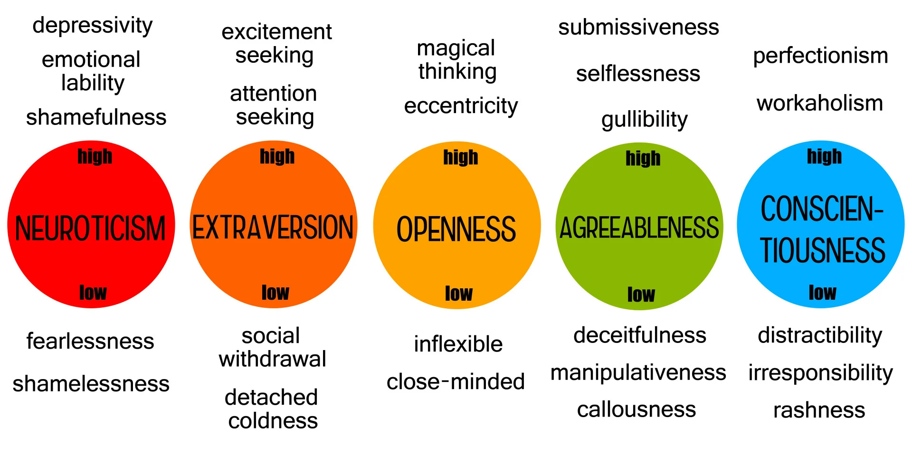
PCA — summarises your data as-is.
EFA — assumes hidden traits cause the pattern in your data.
We’ll spend a little time on PCA, and most of our time on EFA.
You’ll be able to answer three questions:
Many survey items are correlated with each other.
PCA squeezes them into a few components.
Each component captures as much information as possible.
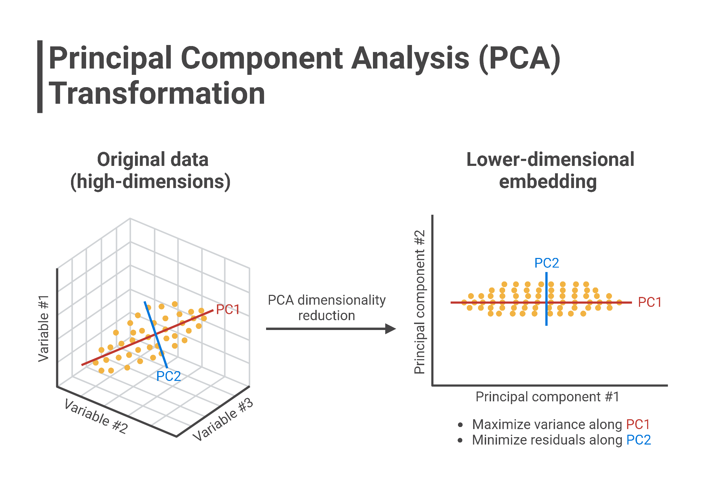
Two correlated variables, plotted together.
One line best summarises both of them.
That line is the first principal component.
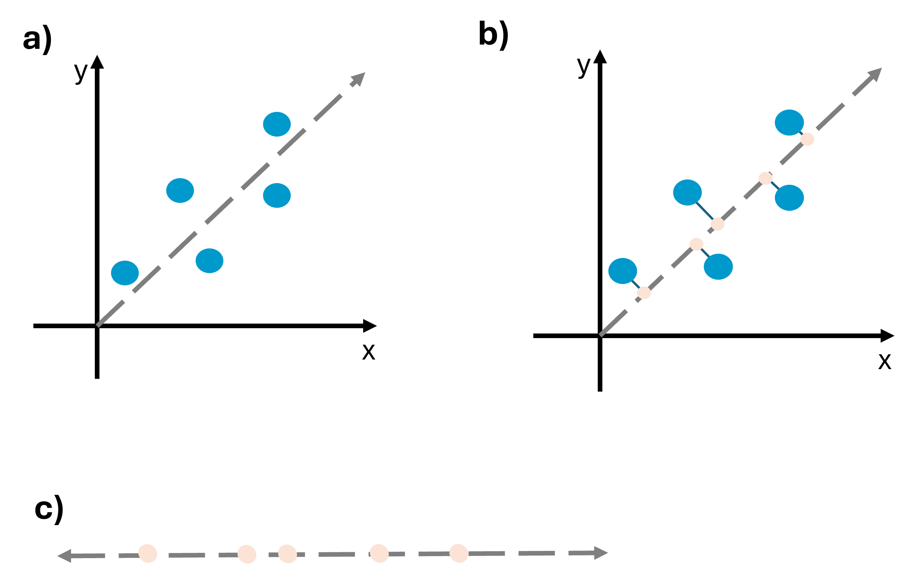
Not a scary formula — just a score.
It tells you how much information one component captures.
Compare it to what a single original item would capture on its own.
PCA sits in the same family as MANOVA and discriminant function analysis (DFA) — all three work from a correlation, or variance-covariance, matrix.
The question PCA asks: could you separate the data using some linear combination of the variables?
Answering that means calculating the eigenvectors of that matrix — each eigenvector’s eigenvalue is exactly the “score” from the last slide.
Rule of thumb: retain the components with the largest eigenvalues; ignore the small ones.
Plot each component’s eigenvalue, largest to smallest.
The line drops fast, then flattens out.
Keep the components before it flattens.
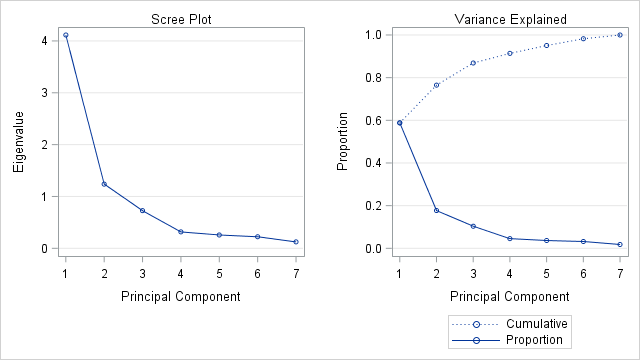
Shrinking many biometric or behavioural measures into a few scores.
Useful when you just want a compact summary of your data.
Same technique, completely different fields.
Cancer subtype classification from gene expression data. Rating hundreds of cities on liveability.
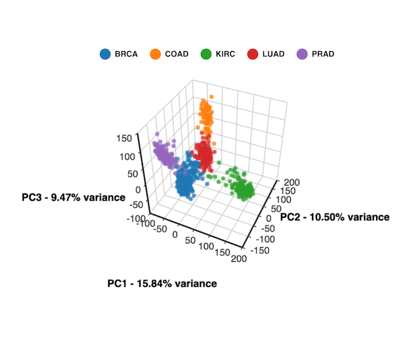
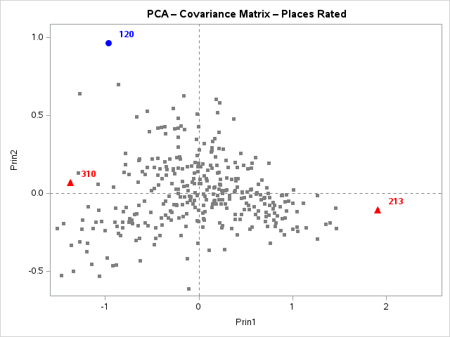
PCA describes your data — nothing more.
It doesn’t assume anything caused the pattern.
But in psychology, we usually believe something did cause it.
You believe a real trait — like anxiety — makes people answer the way they do.
That trait is never measured directly.
You need a technique built around that assumption.
That technique is EFA.
A technique that identifies groups, or clusters, of variables that go together.
It reduces many variables down to a few — but with a specific reason behind the reduction.
You use it when you can’t measure the construct (the latent variable) directly, only different aspects of it.
FA checks whether those different aspects are being driven by the same underlying variable.
Items are correlated because a hidden trait influences all of them.
Each item also has its own leftover error.
That’s the whole logic of EFA.
One hidden factor. Several observed items. One error per item.
Keep this image in mind for the rest of today.
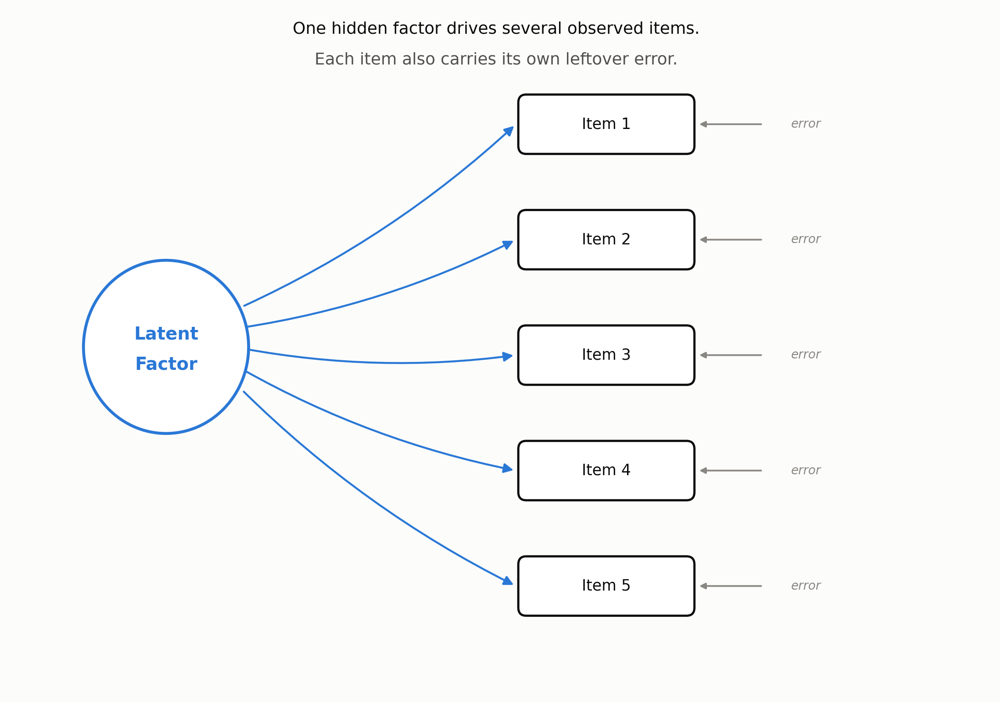
Every EFA starts from the same object: a table of correlations between all your items.
Statisticians call it the R-matrix.
EFA and PCA both try to reduce this matrix into a much smaller set of uncorrelated dimensions.
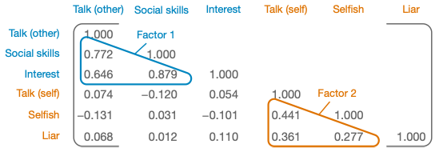
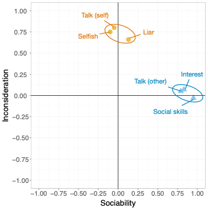
A loading is nothing exotic — it’s a Pearson correlation between an item and a factor.
Plot two factors as axes; each item lands somewhere based on how strongly it correlates with each one.
Items that cluster together on the plot share a factor.
You will never calculate this by hand — Jamovi does it — but the logic is worth seeing once.
Item score = item mean + (loading × common factor) + unique factor
\[x = \mu + \Lambda\xi + \delta\]
x = the observed item, μ = its mean, Λ = the factor loading, ξ = the common factor, δ = the unique factor.
The “common factor” is the hidden trait; the “unique factor” is everything about that item the hidden trait doesn’t explain, including measurement error.
PCA writes it differently — no hidden trait, no error term. A component is just a weighted sum of the items themselves.
\[Y_i = b_1X_{1i} + b_2X_{2i} + \cdots + b_nX_{ni}\]
\[\text{Component}_i = b_1(\text{Variable}_{1i}) + b_2(\text{Variable}_{2i}) + \cdots + b_n(\text{Variable}_{ni})\]
Here b is still called a “loading” — but now it’s just a regression-style weight, not a correlation with a hidden trait.
Worked example (SAQ data): Sociabilityi = b1Talk(other)i + b2SocialSkillsi + b3Interesti + b4Talk(self)i + b5Selfishi + b6Liari
Both FA and PCA are linear models where loadings act as weights.
Collect every item’s loadings into one matrix — called the factor matrix (FA) or component matrix (PCA).
FA’s key assumption, which PCA does not share: these algebraic factors represent real, underlying dimensions — not just convenient arithmetic.
\[\Lambda = \begin{pmatrix} 0.87 & 0.01 \\ 0.96 & -0.03 \\ 0.92 & 0.04 \\ 0.00 & 0.82 \\ -0.10 & 0.75 \\ 0.09 & 0.70 \end{pmatrix}\]
A factor score describes each person on a factor — combining the variables measured with how strongly each one matters (its loading).
The usual approach is the regression method: loadings are adjusted to account for the original correlations between variables. (Other methods exist: Bartlett, Anderson-Rubin.)
Two common uses: reducing a large data set to a smaller set of scores, and combining collinear predictors into a single factor to fix multicollinearity in a regression.
Almost every psychological questionnaire is built this way.
Personality, mood, attitudes, wellbeing — all validated using this logic.
If you build a scale for your thesis, you will use EFA.
Four situations come up again and again in psychology research.
To test for clusters, or understand the structure, of a set of variables — e.g. what is the structure of intelligence?
To construct a questionnaire that measures an underlying variable — e.g. how do you design a questionnaire to measure “love”?
To reduce a data set to a manageable size, while keeping as much of the original information as possible.
Sometimes several measures look different on the surface but may be tapping the same underlying dimension.
Example: anal-retentiveness, number of friends, and social skills might all be aspects of one common dimension — “statistical ability.”
EFA is how you’d test whether that’s actually true, rather than just assuming it.
Today we walk through six decisions a researcher makes.
Each one builds on the last.
Are my items correlated enough to bother factor-analysing?
Two checks, both reported automatically in Jamovi.
| Check | Question It Answers |
|---|---|
| KMO (Kaiser-Meyer-Olkin) | Is there enough shared correlation among items overall? |
| Bartlett’s test | Is the correlation matrix different from “no correlation at all”? |
Same question as PCA — but now, more tools to answer it.
Three common methods. They don’t always agree.
| Method | Rule | How Reliable |
|---|---|---|
| Kaiser (eigenvalue > 1) | Keep any factor with eigenvalue above 1 | Easiest, but tends to over-extract |
| Scree plot | Keep factors before the line flattens | Quick visual check, some judgement needed |
| Parallel analysis | Keep factors stronger than random noise | Most trustworthy — use this as your default |
Kaiser tends to suggest too many factors.
Parallel analysis compares against random data — a fairer test.
Default to parallel analysis.
A method estimates the hidden trait from what items share in common.
You don’t need the maths — Jamovi does this for you.
Today’s extraction step sits inside a bigger family of methods for finding structure in data.
Exploratory — you don’t know the structure yet, so you let the data suggest it: PCA, Principal Factor Analysis (PFA), Independent Component Analysis (ICA). This is EFA’s family, and where today’s Decision 3 choices live.
Confirmatory — you already have a hypothesis about the structure and are testing whether the data fits it: Structural Equation Modelling, Confirmatory Factor Analysis (CFA). That’s next week’s topic.
| Method | In Plain Terms |
|---|---|
| Principal axis factoring | Uses only the variance items share with each other |
| Maximum likelihood | Also lets you test how well the model fits — useful if you want fit statistics |
Communality = the proportion of an item’s variance that’s shared with the other items.
1.0 → all shared. 0 → nothing shared. Most real items land somewhere in between.
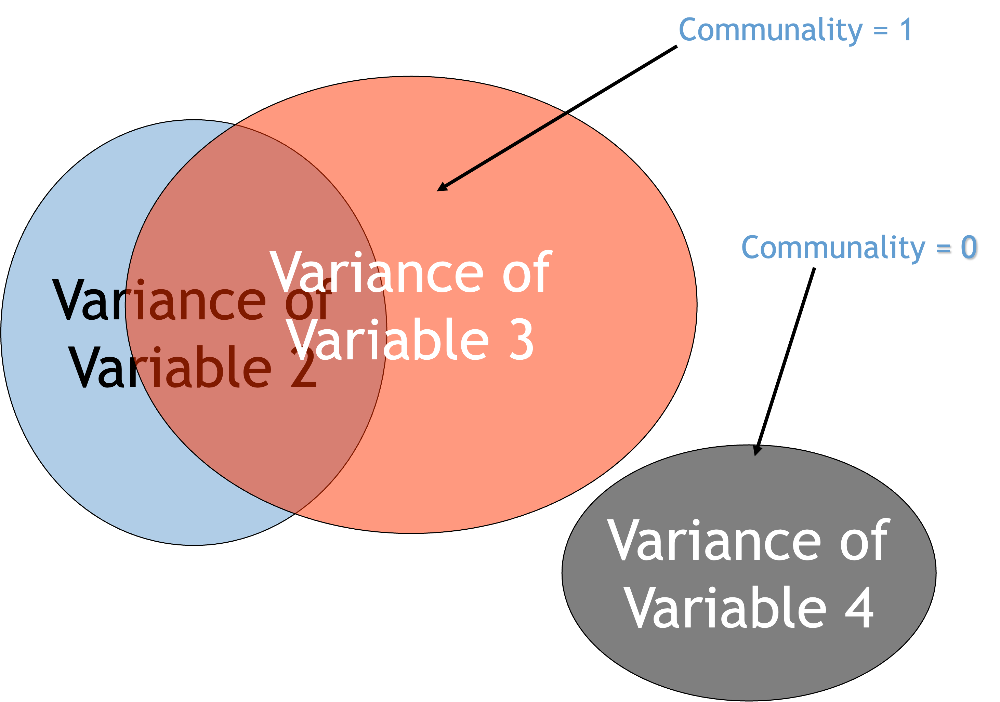
FA aims for parsimony — explaining the maximum common variance using the fewest possible explanatory constructs, called factors.
PCA aims to explain the maximum amount of total variance in the correlation matrix.
It does this by transforming the original variables into a set of linear components instead.
| PCA | EFA | |
|---|---|---|
| Starting communality | Assumes 1.0 for every item — all variance is fair game | Estimated from the data (squared multiple correlation) |
| What that means | Components can absorb unique and error variance too | Factors only explain shared variance |
| How it finds the answer | Decomposes the data into linear components — only asks which components exist and how each variable contributes to them | Derives a mathematical model to estimate the underlying factors — only FA can do this |
This is the technical version of “PCA summarises, EFA explains.”
Rotating axes doesn’t change the structure underneath.
It just makes the structure easier to read.
Like turning a map so north points up.
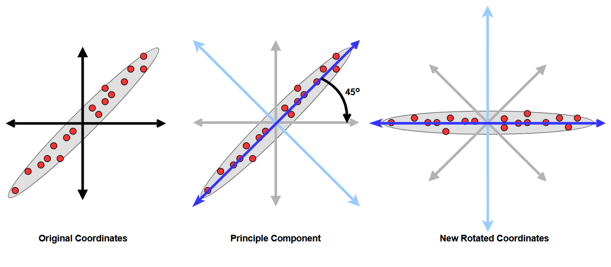
| Family | Method | What It Does |
|---|---|---|
| Orthogonal | Varimax | Spreads loadings so each factor keeps a small number of high loadings — most common default |
| Orthogonal | Quartimax | Spreads loadings across factors for each item instead |
| Orthogonal | Equamax | A hybrid of Varimax and Quartimax — spreads loadings both within and across factors; used less often in practice |
| Oblique | Direct Oblimin | Lets factors correlate; you control how much via a “delta” setting |
| Oblique | Promax | A faster version of the same idea — useful for large datasets |
You won’t need to choose beyond Varimax or Oblimin in this workshop — the table is here so the Jamovi menu doesn’t feel unfamiliar.
Two rotation families. Same purpose — easier reading — different assumption.
| Orthogonal (e.g. Varimax) | Oblique (e.g. Oblimin, Promax) | |
|---|---|---|
| Assumes factors are | Unrelated | Allowed to correlate |
| Realistic for psychology? | Rarely | Usually — traits like anxiety and stress do relate |
| Workshop default | — | Yes, use this |
A loading tells you how strongly an item relates to a factor.
Loadings above roughly .30–.40 count as meaningful.
An item loading on two factors is a “cross-loading” — a flag, not a crisis.
The only step that isn’t purely statistical.
Look at which items group together.
Give the group a name that fits the theme.
Worked example using real data: bfi personality items.
We’ll run through all six decisions together, once, before you try it yourself.
Too few participants for the number of items.
Forcing a factor count the scree plot doesn’t support.
Ignoring cross-loading items.
Calling PCA components “factors” in your write-up — this gets flagged often.
Everything so far has been the logic of EFA.
Now watch it applied to real data, start to finish, using a published example.
23 items designed to measure fear of statistics, SPSS, computers, and maths (Field, Discovering Statistics Using SPSS).
Same six decisions. Real SPSS output this time, not Jamovi — the interpretation logic transfers directly.
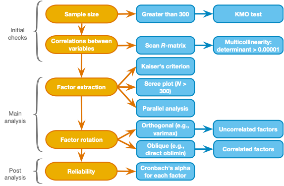
Sample size: 2,571 respondents — comfortably above the 300-participant guideline.
Scan the R-matrix for items correlating too low (< .3) or dangerously high (> .8) before proceeding.
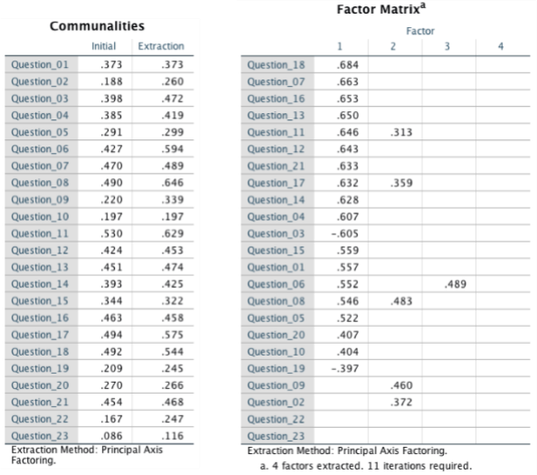
Each item’s communality (left) feeds into an initial, unrotated factor matrix (right) — still hard to read at this stage.
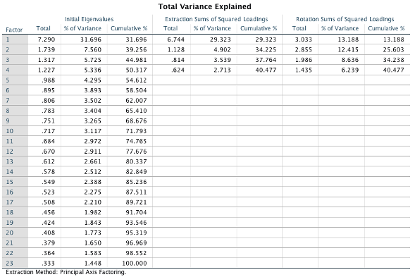
Four factors clear Kaiser’s eigenvalue > 1 rule, together explaining 40.5% of the variance.
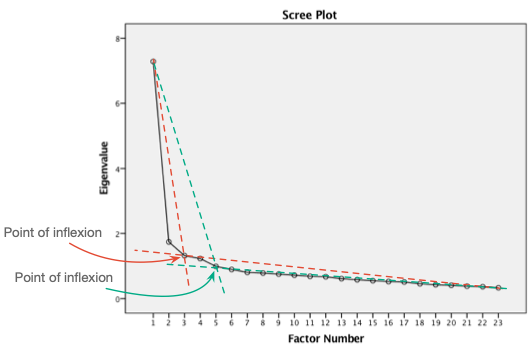
The point of inflexion also lands at four factors — Kaiser and the scree plot agree here.
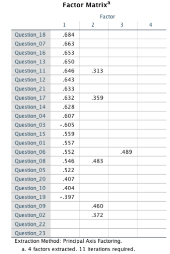
Unrotated loadings pile onto Factor 1, with items spilling across multiple factors. Hard to name anything from this yet.
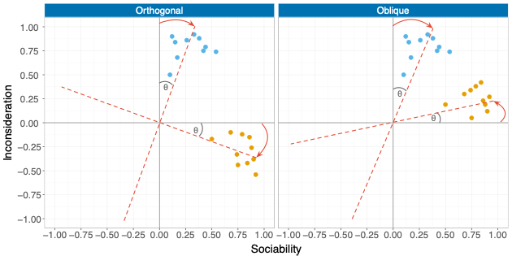
Sociability and inconsideration items separate more cleanly once rotated. Orthogonal and oblique look similar here — they won’t always.
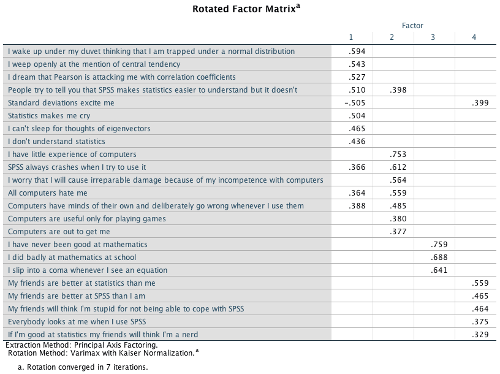
Four clean factors emerge. Item wording tells you what to call them: fear of statistics, fear of computers, fear of maths, peer evaluation.
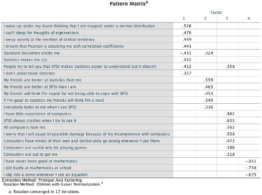
Nearly the same four factors — reassuring, not redundant. When orthogonal and oblique agree, your factor structure is more trustworthy.
Naming factors isn’t the end. Each subscale should also be internally consistent.
Cronbach’s alpha averages the correlation across every possible way of splitting a subscale in half. Think of it as error variance: α = .70 leaves about 30% error, α = .80 leaves about 20%. α > .70 is the common benchmark (Kline, 1999).
Jamovi also reports McDonald’s omega (ω) alongside alpha — a more robust alternative that doesn’t assume equal item loadings or a single underlying factor. When alpha’s assumptions hold, the two are usually close.
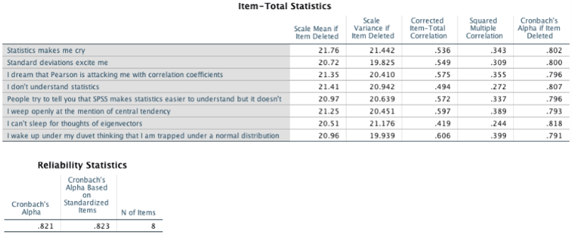
α = .82 across all 8 items — solidly reliable, and every “alpha if item dropped” value is lower than .82, so nothing here is worth removing.
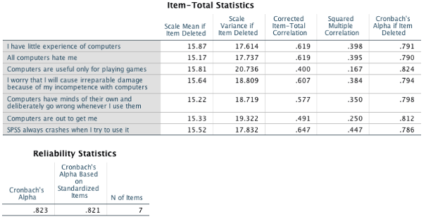
α = .82 across 7 items — comfortably reliable, with only a negligible bump possible from dropping one item.
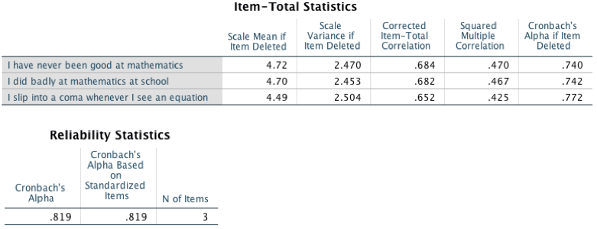
α = .82 from just 3 items — a short subscale that still holds together well.
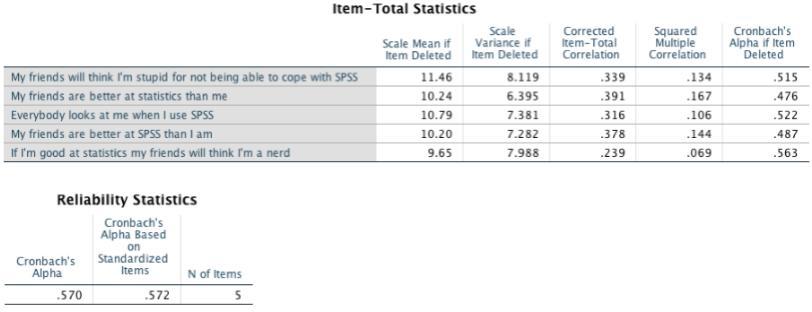
α = .57 — the weakest of the four. Only five items, one of which barely correlates with the rest. Worth flagging in a write-up, not hiding.
A high alpha is not proof of a single underlying construct — alpha measures equivalence, not unidimensionality. A “reliable” α = .80 scale could still be blending more than one construct.
Alpha is also sample-specific: it’s a property of your sample, not a fixed property of the scale itself. Expect it to shift somewhat across studies.
Can alpha be too high? Above α = .95, treat it as a warning, not a bonus — it usually means the items are overly redundant and the construct may be measured too narrowly.
Jamovi’s “if item dropped” column shows whether removing an item would raise alpha — a small gain usually isn’t worth the trade-off.
Four named, reasonably reliable subscales — not a single “SPSS anxiety” score.
Every decision from today, traced through one real dataset, start to finish.
Both reduce many variables into fewer.
That’s where the similarity ends.
Watch which way the arrows point — that’s the whole difference.
PCA: items build the component. EFA: the factor causes the items.
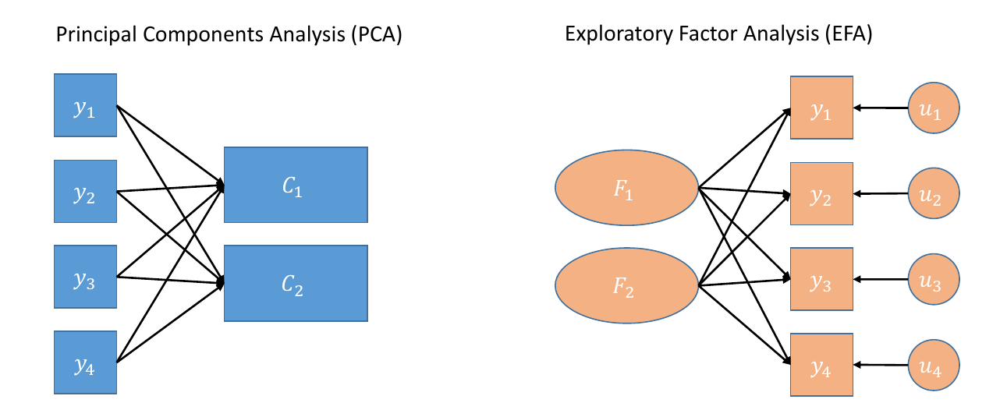
| PCA | EFA | |
|---|---|---|
| Assumes | Nothing caused the pattern | A hidden trait caused the pattern |
| Question answered | “What’s the best summary of my data?” | “What unmeasured trait explains my data?” |
| Typical use | Data reduction, composite scores | Scale development, construct validation |
| Use for your thesis if… | You just need fewer variables to work with | You’re testing/building a psychological construct |
Validating a psychological scale? Use EFA.
Reviewers will ask why, if you use PCA instead.
You’ll run a PCA, then a full EFA, on real data.
Then you’ll name your own factors — just like today’s worked example.
HolzingerSwineford1939.csvbfi.csv (25 personality items)Seven items in bfi need reverse-scoring before the results are fully correct.
Check the codebook before you interpret anything.
Open Jamovi. Load bfi.csv. Let’s begin.
HolzingerSwineford1939.csv — 301 students, two schools.
Nine cognitive ability test scores: x1–x9.
Full variable definitions are in Data/HolzingerSwineford1939-codebook.md.
We only analyse x1–x9.
id, sex, ageyr, agemo, school, grade are identifiers — leave them out.
File → Open → HolzingerSwineford1939.csv.
Check that x1–x9 are read in as continuous, not nominal.
Never run PCA the moment data loads.
Three quick checks first — descriptives, sample size, and redundant items.
Exploration → Descriptives → move x1–x9 in.
Check N, missing count, mean, SD, min/max, skewness/kurtosis.
Catches data-entry errors and unexpected missingness before they contaminate your PCA.
Rule of thumb: at least 5–10 respondents per item, or N ≥ 100–200 overall.
Our data: 301 students, 9 items — comfortably sufficient.
Under PCA’s Assumption Checks, tick the correlation matrix determinant.
A value too close to zero means some items are near-duplicates of each other — PCA’s maths breaks down.
If this happens, consider dropping one of the overlapping items.
Analyses → Factor → Principal Component Analysis.
Move x1–x9 into the Variables box.
Tick KMO test of Sampling Adequacy.
Tick Bartlett’s Test of Sphericity.
These tell you whether your items are correlated enough to bother.
Tick Eigenvalues table and Scree Plot.
Tick Parallel Analysis, if your Jamovi version offers it.
Start with eigenvalues > 1, then check the scree plot agrees.
Tick Hide loadings below, set it to 0.3.
Tick Sort by loading size.
This is the table you’ll actually interpret.
Suitability. How many components. Loadings. Variance explained. Then decide.
| KMO Value | Interpretation |
|---|---|
| Below .50 | Unacceptable — don’t proceed |
| .50–.59 | Poor |
| .60–.69 | Mediocre |
| .70–.79 | Good |
| .80–.89 | Great |
| .90 and above | Excellent |
p < .05 → items are correlated enough. Proceed.
p > .05 → stop. PCA is not appropriate for this data.
Same three methods from the lecture: Kaiser, scree plot, parallel analysis.
They don’t always agree — trust parallel analysis if they don’t.
The cutoff depends on your sample size — smaller samples need higher loadings to trust.
| Sample Size | Minimum Loading to Interpret |
|---|---|
| 150 or fewer | .45 or higher |
| 150–300 | .35 or higher |
| 300 or more | .32 or higher |
Our HolzingerSwineford data has N = 301 — use .32 as the cutoff.
This is a rounded, practical version of Stevens’ (2002) sample-size cutoffs — see the fuller table next.
Stevens (2002) gives a more precise, N-specific version of the same rule — a general statistical guideline, not tied to SPSS or any other software. It’s still the standard reference cited in Jamovi- and R-based textbooks today.
| N | Minimum Loading | N | Minimum Loading |
|---|---|---|---|
| 50 | .72 | 300 | .30 |
| 100 | .51 | 600 | .21 |
| 200 | .36 | 1,000 | .16 |
Squaring a loading tells you how much of that item’s variance the factor explains — e.g. a loading of .40 → the factor accounts for 16% of that item’s variance. A loading around .40 is a common floor for “meaningful,” on top of whichever significance cutoff above applies.
Look at the cumulative “% of Variance” column in the eigenvalues table.
Aim for at least 50–60% cumulative variance across retained components.
Lower isn’t automatically wrong — just be ready to justify it.
Good KMO, significant Bartlett’s → your data is suitable.
Methods agree on component count → keep that many.
Loadings clear the cutoff, variance is reasonable → your solution is interpretable.
bfi.csv — 2,800 respondents, 25 personality items.
Five expected traits: Openness, Conscientiousness, Extraversion, Agreeableness, Neuroticism.
Full item wording and scoring in Data/bfi-dataset-codebook.md.
rownames is an ID column — leave it out of the analysis.
File → Open → bfi.csv.
Confirm all 25 items (A1–O5) are read as continuous.
Same three checks as PCA — descriptives, sample size, redundant items.
Plus one check specific to this dataset: reverse-keyed items.
Exploration → Descriptives → move all 25 items in.
Check missingness carefully — unlike HolzingerSwineford1939, bfi has real missing data.
Watch for means/SDs that look implausible for a 1–6 scale.
2,800 respondents, 25 items — comfortably exceeds every rule of thumb.
Worth noting out loud: most thesis samples won’t be this large. Don’t let this dataset set your expectations.
Seven items are worded in the opposite direction and must be reverse-scored first.
| Trait | Reverse-keyed items |
|---|---|
| Agreeableness | A1 |
| Conscientiousness | C4, C5 |
| Extraversion | E1, E2 |
| Openness | O2, O5 |
Good news: Jamovi’s EFA module has a built-in Reverse Scaled Items box — no manual recoding required.
Analyses → Factor → Exploratory Factor Analysis.
Move all 25 items into Variables.
Move A1, C4, C5, E1, E2, O2, O5 into Reverse Scaled Items.
Tick KMO test and Bartlett’s Test of Sphericity, same as PCA.
With N = 2,800, both will almost certainly pass — the real test comes later.
Extraction: Maximum Likelihood — lets you also check model fit.
Rotation: Oblimin (oblique) — the workshop default from the lecture.
Tick Eigenvalues, Scree Plot, and Parallel Analysis.
We expect 5 factors going in — check whether the data agrees.
Tick Hide loadings below, set it to 0.3.
Tick Sort by loading size.
This is the table you’ll use to name your factors.
Tick RMSEA and TLI under fit measures.
These only appear with Maximum Likelihood extraction — one more reason we chose it.
Suitability. Factor count. Loadings. Cross-loadings. Fit. Naming.
Same cutoffs as PCA — KMO above .60, Bartlett’s p < .05.
Same three methods as before: Kaiser, scree plot, parallel analysis.
Now compare the answer against your theoretical expectation — 5 traits.
If parallel analysis disagrees with theory, that’s a discussion point for your write-up, not necessarily a mistake.
Same cutoff table as PCA, by sample size — and the same Stevens (2002) logic underneath it.
| Sample Size | Minimum Loading to Interpret |
|---|---|
| 150 or fewer | .45 or higher |
| 150–300 | .35 or higher |
| 300 or more | .32 or higher |
Our bfi data has N = 2,800 — use .32 as the cutoff.
| Pattern | What It Means |
|---|---|
| Loads above .32 on one factor only | Clean item — keep it |
| Loads above .32 on two factors, both similar in size | Cross-loading — flag it, discuss in your write-up |
| Doesn’t load above .32 on any factor | Weak item — consider dropping it |
Only available with Maximum Likelihood extraction.
| Index | Good Fit | Acceptable Fit |
|---|---|---|
| RMSEA | Below .05 | .05–.08 |
| TLI | Above .95 | .90–.95 |
The interpretive step — no cutoff tells you this one.
Look at which items cluster together within each factor.
Small groups: name each factor in 2–3 minutes, then compare to the Big Five labels.
Good KMO/Bartlett’s, sample size adequate → data is suitable.
Methods agree near 5 factors, fit acceptable → solution is defensible.
Clean loadings, minimal cross-loading → ready to name and report.
PCA & EFA — Lecture